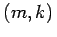
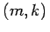

Inhalt Index DeskTop Bronstein

 Dynamische Systeme und Chaos Gewöhnliche Differentialgleichungen und Abbildungen Qualitative Theorie gewöhnlicher Differentialgleichungen Stabilitätstheorie
Dynamische Systeme und Chaos Gewöhnliche Differentialgleichungen und Abbildungen Qualitative Theorie gewöhnlicher Differentialgleichungen Stabilitätstheorie


Sei x0 eine Ruhelage von (17.1). Das lokale Verhalten der Orbits von (17.1) nahe x0 wird, unter gewissen Voraussetzungen, durch die Variationsgleichung beschrieben, wobei Df(x0) die JACOBI-Matrix von f in x0 ist. Besitzt Df(x0) keinen Eigenwert  mit Re, so heißt die Ruhelage x0 hyperbolisch. Die hyperbolische Ruhelage x0 ist vom Typ , wenn Df(x0) genau m Eigenwerte mit negativem Realteil und k = n - m Eigenwerte mit positivem Realteil besitzt. Die hyperbolische Ruhelage vom Typ (m,k) heißt Senke, wenn m = n ist, Quelle, wenn k = n ist, und Sattel, wenn
mit Re, so heißt die Ruhelage x0 hyperbolisch. Die hyperbolische Ruhelage x0 ist vom Typ , wenn Df(x0) genau m Eigenwerte mit negativem Realteil und k = n - m Eigenwerte mit positivem Realteil besitzt. Die hyperbolische Ruhelage vom Typ (m,k) heißt Senke, wenn m = n ist, Quelle, wenn k = n ist, und Sattel, wenn  und ist (s. die folgenden Abbildungen).
und ist (s. die folgenden Abbildungen).
Es gilt der folgende
Satz über Stabilität in der ersten Näherung für kontinuierliche dynamische Systeme: Eine Senke ist asymptotisch stabil; Quellen und Sattel sind instabil.
Im Rahmen der drei topologischen Grundtypen von hyperbolischen Ruhelagen (Senke, Quelle und Sattelpunkte) sind weitere algebraische Unterscheidungen üblich. So heißt eine Senke (Quelle) stabiler Knoten (instabiler Knoten), wenn alle Eigenwerte der JACOBI-Matrix reell sind, und stabiler Strudel (instabiler Strudel), wenn Eigenwerte mit nicht verschwindendem Imaginärteil vorliegen. Für n = 3 ergibt sich daraus eine Einteilung der Sattelpunkte in Sattelknoten und Sattelstrudel.
In den folgenden Abbildungen sind für die drei toplogischen Grundtypen jeweils links die Eigenwerte der JACOBI-Matrix und rechts das Phasenporträt dargestellt.